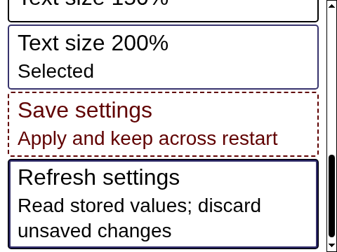

Accessibility
Access is built into the same interface, not a separate mode.
Keyboard access
Controls use native semantics and a predictable order. Every pointer action has a keyboard route; a visible shortcut legend offers alternatives when the browser or operating system intercepts a shortcut.
Focus
A visible offset ring identifies the focused control. Window focus uses a separate neutral edge and title beacon. Six pixels of paint and scroll space keep rings visible.
Names and semantics
Visible labels provide accessible names. Buttons, links, fields and choices retain their real semantics. Decorative icons do not replace names. Focus returns to the opener when a popup closes.
Contrast and redundant cues
Text pairs meet 4.5:1 and essential boundaries meet 3:1. Status combines color with a symbol and words; disabled labels remain at full opacity. Forced colors retain actual borders and outlines.
Text enlargement
The committed desktop scale is 100, 125, 150 or 200 percent, applied once at the root. Content wraps instead of shrinking. Browser zoom scales the full page; documentation reflows at 320 CSS pixels.
Motion, effects and transparency
Reduced motion removes durations and the portal. High contrast and forced colors use effects-off. Opaque surfaces remain opaque with no backdrop blur or client dimming.
Announcement ownership
One designated surface announces a change. Static status text does not repeat live announcements. Critical interruption follows the user’s consent.
Real interface evidence

